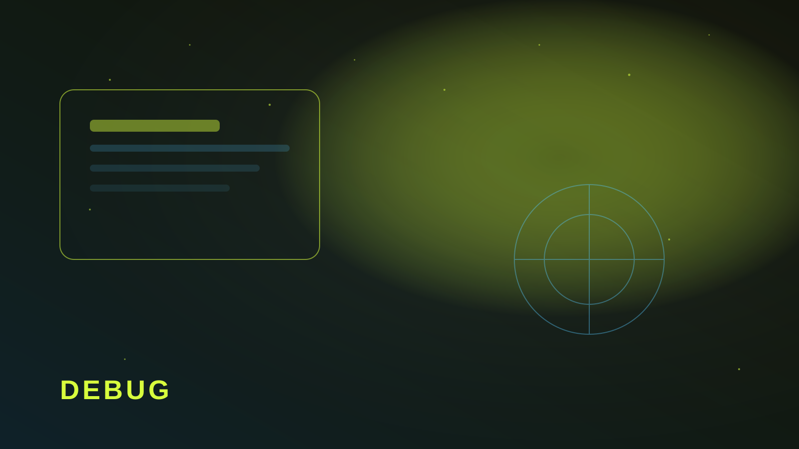

Пять причин, почему заявки «не доходят»
- Письма в спаме или на несуществующий ящик.
- Endpoint формы не настроен / отдал 500.
- CORS или CSP режет запрос с продакшена.
- Кнопка «Отправить» потеряла обработчик после правок вёрстки.
- Валидация молча блокирует отправку на мобильном.
Большинство «сайт сломан» — это один из пунктов выше. Не нужна магия: нужна тестовая заявка и проверка по маршруту.

Чеклист на 15 минут
Отправьте заявку с телефона. Проверьте спам. Откройте логи сервера/сервиса. Проверьте Network в DevTools. Убедитесь, что success-страница не 404. Если один шаг красный — чините до рекламы.
Отдельно: подтвердите, что уведомление РїСЂРёС…РѕРґРёС‚ тому менеджеру, который реально отвечает. Рначе форма «работает», Р° продажи — нет.